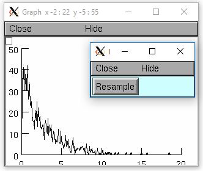

- Random
- ACG · binomial · discunif · erlang · geometric · hypergeo · lognormal · MCellRan4 · MLCG · negexp · normal · play · poisson · Random123 · Random123_globalindex · repick · seq · uniform · weibull
Pseudo-Random Number Generation
Pseudo-random numbers from a variety of distributions may be generated with the Random class. Multiple random number generators are provided; low level access to the mcell_ran4 generator is described in:
Random Class
- class Random
- Syntax:
h.Random()h.Random(seed)h.Random(seed, size)- Description:
The Random class provides commonly used random distributions which are useful for stochastic simulations. The default distribution is normal with mean = 0 and standard deviation = 1.
This class is an interface to the RNG class from the gnu c++ class library. As of version 5.2, a cryptographic quality RNG class wrapper for
mcell_ran4()was added and is available with theRandom.MCellRan4()method. The current default random generator isRandom.ACG().As of version 7.3, a more versatile cryptographic quality generator, Random123, is available with the
Random.Random123()method. This generator uses a 34bit counter, up to 3 32 bit identifiers, and a 32 bit global index and is most suitable for managing separate independent, reproducible, restartable streams that are unique to individual cell and synapses in large parallel network models. See: http://www.thesalmons.org/john/random123/papers/random123sc11.pdfNote that multiple instances of the Random class will produce different streams of random numbers only if their seeds are different.
One can switch distributions at any time but if the distribution is stationary then it is more efficient to use
Random.repick()to avoid constructor/destructor overhead.
Example:
from neuron import h r = h.Random() for i in range(10): print(r.uniform(30, 50)) # not as efficient as for i in range(10): print(r.repick()) # this
prints 20 random numbers ranging in value between 30 and 50.
- Random.ACG()
- Syntax:
r.ACG()r.ACG(seed)r.ACG(seed, size)- Description:
Use a variant of the Linear Congruential Generator (algorithm M) described in Knuth, Art of Computer Programming, Vol. III in combination with a Fibonacci Additive Congruential Generator. This is a “very high quality” random number generator, Default size is 55, giving a size of 1244 bytes to the structure. Minimum size is 7 (total 100 bytes), maximum size is 98 (total 2440 bytes).
- Random.MLCG()
- Syntax:
r.MLCG()r.MLCG(seed1)r.MLCG(seed1, seed2)- Description:
Use a Multiplicative Linear Congruential Generator. Not as high quality as the ACG. It uses only 8 bytes.
- Random.MCellRan4()
- Syntax:
highindex = r.MCellRan4()highindex = r.MCellRan4(highindex)highindex = r.MCellRan4(highindex, lowindex)- Description:
Use the MCell variant of the Ran4 generator. See
mcell_ran4(). In the no argument case or if the highindex is 0, then the system selects an index which is the random 32 bit integer resulting from an mcell_ran4 call with an index equal to the the number of instances of the Random generator that had been created. Thus, each stream should be statistically independent as long as the highindex values differ by more than the eventual length of the stream. In any case, the initial highindex is returned and can be used to restart an instance of the generator. Usemcell_ran4_init()to set the (global) low 32 bit index of the generator. TheRandom.seq()method is useful for getting the current sequence number and restarting at that sequence number (highindex). If the lowindex arg is present and nonzero, then that lowindex is used instead of the global one specified bymcell_ran4_init(). This allows 2^32-1 independent streams that do not overlap.Note that for reproducibility, the distribution should be defined AFTER setting the seed since some distributions, such as
Random.normal(), hold state information from a previous pick from the uniform distribution.
See also
Example:
from neuron import h, gui r = h.Random() index = h.ref(r.MCellRan4()) r.uniform(0, 2) vec = h.Vector(1000) g1 = h.Graph() g2 = h.Graph() g1.size(0, 1000, 0, 2) g2.size(0, 2, 0, 150) def doit(): g1.erase() g2.erase() vec.setrand(r) hist = vec.histogram(0, 2, 0.2) vec.line(g1) hist.line(g2, .2) g1.flush() g2.flush() def set_index_then_doit(): r.MCellRan4(index[0]) doit() doit() h.xpanel("MCellRan4 test") h.xbutton("Sample", doit) h.xvalue("Original index", index, 1, set_index_then_doit) h.xpanel()

- Random.Random123()
- Syntax:
0 = r.Random123(id1, id2, id3)- Description:
Use the Random123 generator (currently philox4x32 is the crypotgraphic hash used) with the stream identified by the identifiers 0 <= id1,2,3 < 2^32 and the global index (see
Random.Random123_globalindex()). The counter, which increments from 0 to 2^34-1, is initialized to 0 (seeRandom.seq()). If any of the up to 3 arguments are missing, it is assumed 0.The generators should be usable in the context of threads as long as no instance is used in more than one thread.
This generator uses a 34bit counter, 3 32 bit identifiers, and a 32 bit global index and is most suitable for managing separate independent, reproducible, restartable streams that are unique to individual cell and synapses in large parallel network models. See: http://www.thesalmons.org/john/random123/papers/random123sc11.pdf
- Random.Random123_globalindex()
- Syntax:
uint32 = r.Random123_globalindex([uint32])- Description:
Gets and sets the global index used by all instances of the Random123 instances of Random.
- Random.seq()
- Syntax:
currenthighindex = r.seq()r.seq(sethighindex)- Description:
For MCellRan4, Gets and sets the current highindex value when the
Random.MCellRan4()is in use. This allows restarting the generator at any specified point. Note that the currenthighindex value is incremented everyRandom.repick(). Usually the increment is 1 but some distributions, e.g.Random.poisson()can increment by more. Also, some distributions, e.g.Random.normal(), pick twice on the first repick but once thereafter.For Random123, Gets and sets the counter value which ranges from 0 to 2^34-1. The reason the the greater range is that the internal Random123 generators return 4 uint32 values on each call. So that is done only every 4 picks from the generator.
Example:
from neuron import h r = h.Random() r.negexp(1) h.mcell_ran4_init(1) r.MCellRan4(1) for i in range(11): print(i, r.repick()) r.MCellRan4(1) for i in range(6): print(i, r.repick()) idum = r.seq() print(f"idum = {idum}") for i in range(6, 11): print(i, r.repick()) print("restarting") r.seq(idum) for i in range(6, 11): print(i, r.repick()) print("restarting") r.seq(idum) for i in range(6, 11): print(i, r.repick())
Output:
0 1.51709661466 1 0.485175784418 2 0.212032709823 3 0.503178330905 4 0.114339664628 5 1.28075206782 6 0.0578608361212 7 0.26376087479 8 0.291156947261 9 3.21937205675 10 0.409557452659 0 1.51709661466 1 0.485175784418 2 0.212032709823 3 0.503178330905 4 0.114339664628 5 1.28075206782 idum = 7.0 6 0.0578608361212 7 0.26376087479 8 0.291156947261 9 3.21937205675 10 0.409557452659 restarting 6 0.0578608361212 7 0.26376087479 8 0.291156947261 9 3.21937205675 10 0.409557452659 restarting 6 0.0578608361212 7 0.26376087479 8 0.291156947261 9 3.21937205675 10 0.409557452659
- Random.repick()
- Syntax:
r.repick()- Description:
Pick again from the distribution last used.
- Random.play()
- Syntax:
r.play(_ref_var)- Description:
At the beginning of every call to
fadvance()andfinitialize()var is set to a new value equivalent tovar = r.repick()
(but with no interpreter overhead). This is similar in concept to
Vector.play(). Play may be called several times for different variables and each variable will get an independent random value but with the same distribution. To disconnect the Random object from its list of variables, either the variables or the Random object must be destroyed.
Example:
from neuron import h r = h.Random() # set the distribution r.uniform(0, 1) # create a reference, and have the uniform random variable update it at each time step rv = h.ref(0) r.play(rv) # print some random numbers for i in range(5): h.fadvance() print(rv[0])
More practically, this might be used with a fixed time step to set, say,
h.IClamp[0]._ref_ampfor a random current injection.
- Random.uniform()
- Syntax:
r.uniform(low, high)- Description:
Create a uniform random variable over the open interval (low…high).
See examples of this in
Random.MCellRan4()andRandom.play().
- Random.discunif()
- Syntax:
r.discunif(low, high)- Description:
Create a uniform random variable over the discrete integers from low to high.
- Random.normal()
- Syntax:
r.normal(mean, variance)- Description:
Gaussian distribution.
Example:
from neuron import h, gui r = h.Random() r.normal(-1, .5) vec = h.Vector() vec.indgen(-3, 2, .1) # x-axis for plot hist = h.Vector(vec.size()) g = h.Graph() g.size(-3, 2, 0, 50) hist.plot(g, vec) for i in range(500): x = r.repick() print(i, x) j = int((x+3)*10) # -3 to 2 -> 0 to 50 if j >= 0: hist[j] += 1 g.flush() h.doNotify()

- Random.lognormal()
- Syntax:
r.lognormal(mean, variance)- Description:
Create a logarithmic normal distribution.
Example:
from neuron import h, gui r = h.Random() r.lognormal(5,2) n=20 xvec = h.Vector(n*3) # bins look like discrete spikes for i in range(n): xvec[3*i] = i - 0.1 xvec[3*i+1] = i xvec[3*i+2] = i + .1 hist = h.Vector(xvec.size()) g = h.Graph() g.size(0, 15, 0, 120) hist.plot(g, xvec) for i in range(500): x = r.repick() print(i, x) j = 3 * int(x) + 1 if j >= hist.size(): # don't let any off the edge j = hist.size() - 1 hist[j] = hist[j]+1 g.flush() h.doNotify()

- Random.poisson()
- Syntax:
r.poisson(mean)- Description:
Create a poisson distribution.
Example:
from neuron import h, gui r = h.Random() r.poisson(3) n=20 xvec = h.Vector(n*3) for i in range(n): xvec[3*i] = i-.1 xvec[3*i+1] = i xvec[3*i+2] = i+.1 hist = h.Vector(xvec.size()) g = h.Graph() g.size(0, 15, 0, 120) hist.plot(g, xvec) for i in range(500): x = r.repick() print(i, x) j = int(x) j = 3*j+1 if j >= hist.size(): j = hist.size() -1 hist[j] = hist[j]+1 g.flush() h.doNotify()

- Random.binomial()
- Syntax:
r.binomial(N,p)- Description:
Create a binomial distribution. Returns the number of “successes” after N trials when the probability of a success after one trial is p. (n>0, 0<=p<=1).
P(n, N, p) = p * P(n-1, N-1, p) + (1 - p) * P(n, N-1, p)
Example:
from neuron import h, gui r = h.Random() r.binomial(20, .5) g = h.Graph() g.size(0, 20, 0, 100) hist = h.Vector(20) hist.plot(g) for i in range(500): j = int(r.repick()) # r.repick() always returns a float even though the binomial always is an integer hist[j] += 1 g.flush() h.doNotify()

- Random.geometric()
- Syntax:
r.geometric(mean)- Description:
Create a discrete geometric distribution. Given 0<=*mean*<=1, return the number of uniform random samples that were drawn before the sample was larger than the mean (always greater than 0).
Example:
from neuron import h, gui r = h.Random() r.geometric(.8) hist = new Vector(1000) def sample(): hist = h.Vector(1000) hist.setrand(r) hist = hist.histogram(0,100,1) hist.plot(g) g = h.Graph() g.size(0,40,0,200) sample() h.xpanel("Resample") h.xbutton("Resample", sample) h.xpanel()

- Random.hypergeo()
- Syntax:
r.hypergeo(mean,variance)- Description:
Create a hypergeometric distribution.
- Random.negexp()
- Syntax:
r.negexp(mean)- Description:
Create a negative exponential distribution. Distributed as the intervals between events in a poisson distribution.
Example:
from neuron import h, gui r = h.Random() r.negexp(2.5) hist = h.Vector(1000) def sample(): hist = h.Vector(1000) hist.setrand(r) hist = hist.histogram(0,20,.1) hist.plot(g, .1) g = h.Graph() g.size(0,20,0,50) sample() h.xpanel("Resample") h.xbutton("Resample", sample) h.xpanel()
- Random.erlang()
- Syntax:
r.erlang(mean,variance)- Description:
Create an Erlang distribution.
- Random.weibull()
- Syntax:
r.weibull(alpha,beta)- Description:
Create a Weibull distribution.
NMODLRandom Class
- class NMODLRandom
- Syntax:
r = point_process.ranvarr = section(x).mech.ranvarr = section(x).ranvar_mech- Description:
Returns an NMODLRandom wrapper for the nrnran123_State associated with the mechanism RANDOM ranvar variable. Note that an attempt to assign a value to ranvar will raise an error. At present, all mentions of ranvar in the context of a specific mechanism instance return a wrapper for the same nrnran123_State (though the NMODLRandom instances are different).
- NMODLRandom.get_ids()
- Syntax:
vector = r.get_ids()- Description:
Returns a HOC Vector of size 3 containing the 32 bit id1, id2, id3 of the nrnran123_State
- NMODLRandom.set_ids()
- Syntax:
r = r.set_ids(id1, id2, id3)- Description:
Sets the 32 bit id1, id2, id3 of the nrnran123_State and returns the same NModlRandom instance.
- NMODLRandom.get_seq()
- Syntax:
x = r.get_seq()- Description:
Returns as a float, the 34 bit sequence position of the nrnran123_State
- NMODLRandom.set_seq()
- Syntax:
r = r.set_seq(x)- Description:
Sets the 34 bit sequence position of the nrnran123_State. Returns the same NMODLRandom instance.
- NMODLRandom.uniform()
- Syntax:
x = r.uniform()- Description:
Returns as a float, the uniform random value in the open interval 0 to 1 at the current sequence position of the nrnran123_State (the current sequence position is then incremented by 1) This is, for testing purposes, the only distribution exposed to the interpreter. We don’t forsee any practical use of NMODLRandom within the interpreter in regard to sampling. The purpose of NMODLRandom is to allow setting of stream properties for a mod file RANDOM variable. Indeed, if one explicitly constructs an NMODLRandom from the interpreter, then
from neuron import h r = h.NMODLRandom() print(r.uniform()) NEURON: NMODLRandom wrapped handle is not valid